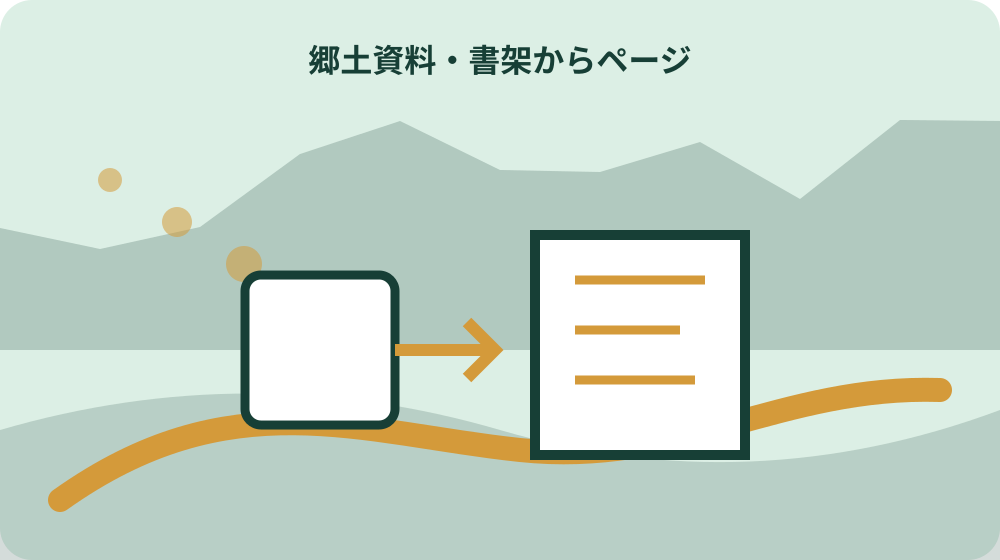
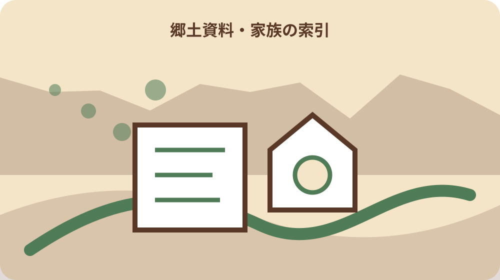

先に結論を確認する
この記事の答え：所蔵館、資料名、版・巻号、出版者、出版年、森町立図書館で表示された請求記号、所蔵場所、閲覧日を別欄で記録します。本文の内容は、その後に該当ページと見出しを付けて残します。
森町で最初に照合する条件：森町立図書館の検索画面で表示された請求記号をそのまま写し、国立国会図書館の請求記号で置き換えない。
探した本の題名だけでは次の人が戻れない
森町の祭礼、旧道、家の来歴を図書館で調べ、家族へ「町史に載っていた」と伝えても、資料名だけでは同じ箇所へ戻れません。同名に近い本、改訂版、上下巻があれば、どの一冊のどこを見たのかが消えてしまいます。この記事では閲覧の成果より、再確認できる入口を残します。
最初のメモには、所蔵館、資料名、巻号、版表示、編著者、出版者、出版年、請求記号、所蔵場所、閲覧日を置きます。分からない項目は空欄にせず「表示なし」「未確認」と書きます。後で補える欠落と、写し忘れを区別するためです。
本文から得た情報は、書誌事項の下へすぐ混ぜません。ページ、章見出し、記載された地名・人名・年月、短い要約、疑問点を別の枠にします。本を識別する情報と、本から読み取った内容を分けるだけで、別の家族が検索結果から現物へたどれます。現物の背ラベルと検索画面の表示に差があれば両方を写し、どちらかへ無断で統一しません。
目標は郷土史の結論を一日で出すことではありません。どの資料を、いつ、どの条件で見て、何が確定し、何が保留になったかを一件ずつ残すことです。資料が見つからなかった検索も、使った語句と日付を記録すれば次の調査を重複させません。
森町立図書館の検索結果を一件ずつ保存する
森町公式は、図書館の図書検索コーナーで利用者がコンピューターを操作し、蔵書や資料を検索できると案内しています。まず広い言葉を一つ入れ、結果が多ければ地名、行事、人物、年代を足します。複数語を長く並べる前に、一語ごとの結果件数をメモします。
検索結果から候補を選ぶときは、題名だけを手帳へ写さず、画面に出る著者、出版者、出版年、資料種別、請求記号、所蔵状況を項目別に控えます。表示されない欄を想像で埋めません。操作画面が変わった場合は、項目名そのものも閲覧日に合わせて残します。印刷機能を使った場合も、印刷日時と検索語を余白へ書き、後日の検索結果と区別します。
例えば「天宮」で該当が多いなら、祭礼、神社、地区史など意味の違う検索語を別々に試します。「森」だけでは一般語の本が混ざるため、森町、周智、遠州など地域を示す語も比較します。該当なしの語は消さず、次回に旧表記を試す理由として残します。
検索端末で候補を見つけても、現物をすぐ手に取れるとは限りません。棚の場所、貸出中、館内での利用、職員への依頼が必要かを画面とカウンターで確かめます。候補一覧には「発見」と「閲覧済み」を別の状態で持たせ、見つけただけの本を確認済みにしません。
請求記号は所蔵館とセットで転記する
請求記号は本の題名の略称ではなく、所蔵資料へ近づくための識別情報です。国立国会図書館サーチも、ローカル請求記号を所蔵先ごとに付与する番号と説明しています。別の館の番号を森町立図書館の棚番号と思い込まないよう、必ず所蔵館名と一組で書きます。
記号は英数字、区切り、空白、枝番号まで見たまま転記します。似た文字を後から整えたり、先頭の地域資料記号を省いたりすると、再検索で別資料になる恐れがあります。手書きが不鮮明なら二度読みし、疑わしい文字へ印を付けてカウンターで確認します。
同じ題名が複数館にある場合、一件カードを館ごとに分けます。国立国会図書館の請求記号、書誌ID、森町立図書館で表示された請求記号を横並びにする場合も、列名から館名を外しません。番号が違うことは誤りではなく、管理する所蔵先が違う可能性を示します。
請求記号のほか、所蔵場所と利用状態も別欄にします。国立国会図書館サーチがローカル請求記号、資料貼付ID、所蔵場所、利用メッセージを分ける考え方は、家庭の閲覧メモにも応用できます。ただし森町立図書館の表示項目は同館の画面で確かめます。

版・巻号・出版年を別欄に置く
町史、地区誌、記念誌、年報は、題名が同じでも上巻と下巻、本文編と資料編、改訂前後で内容が違います。タイトル欄へ全情報を詰め込まず、巻次・部編、版表示、出版年を分けます。索引だけ別冊の場合は、本文との対応も関連資料欄に残します。
雑誌や会報では、通巻番号、巻号、発行年月を控えます。合本された現物では背表紙の表示と個々の号が違うこともあるため、実際に読んだ号の表紙または奥付を確認します。「昭和の会報」のような年代幅だけで引用先を作りません。
復刻版や影印版を見たときは、元資料の年代と手元の版の出版年を二つ持ちます。古い出来事が書かれているからといって、閲覧した物そのものの刊行年も古いとは限りません。どの版でページを確認したかが分かれば、家族はページずれの理由を探せます。
出版者と編者も分けます。町、教育委員会、町内会、保存会、個人など、作成主体は記述の範囲を考える手掛かりですが、肩書だけで正確さを決めません。資料が何を目的に、どの時点までを扱うのかを序文や凡例で読み、メモへ添えます。
閲覧前に調べたい地名と年代を一文にする
来館前に「祖父の家を調べたい」ではなく、「昭和前期の森町○○地区で、旧道沿いの屋号と建物位置を確かめたい」のように対象を一文にします。場所、年代、対象物の三つがあれば、検索語を変えるときも調査の中心がぶれません。
手元に写真、手紙、登記資料があれば、原本を大量に持ち歩かず、資料番号と分かる範囲の情報を一覧にします。写真の公開や複写の可否とは別に、相談時に何を見せるかを決めます。個人情報を含む資料は、カウンターでの相談方法を先に尋ねます。
地名は現在の住所、旧字、旧町村、町内会名、通称を候補として並べます。同じ音でも漢字が違う場合や、地区の範囲が時代で変わる場合があります。最初から一つの表記へ統一せず、どの資料にどの形で出たかを残します。
年代も一点に決められないなら幅で示します。「戦前」「祖父の若い頃」だけでは検索しにくいため、写真の裏書、家族の年齢、建築や道路の出来事から得た上限と下限を別々に書きます。推定の根拠が弱いと分かることも、調査条件の一部です。
該当ページと前後の見出しを同時に控える
目的の語を見つけたら、そのページ番号だけでなく章・節の見出しも控えます。同じ人名や神社名が索引に複数回出る場合、見出しがあれば祭礼、建築、人物伝のどの文脈かを区別できます。ページ番号は印刷面とPDF表示で異なる場合も注記します。
一文だけ抜き出す前に、前後の段落を読みます。「かつて」「伝える」「推定される」など確度を示す言葉が前文にあることがあります。閲覧メモには短い要約だけでなく、原文が断定か伝承か、自分がどう読んだかを別欄で残します。
図版や地図では、図番号、題名、凡例、縮尺、方位、作成年、出典を控えます。地図に線があるだけで現在の境界や道路種別とは決めません。図が本文のどの説明を補うものかを確認し、土地調査へ使う場合は現在資料と照合する前提を付けます。
コピーや撮影が認められた場合でも、画像だけを保存して書誌メモを捨てません。画像ファイル名へ一件カード番号とページを入れ、元資料の情報へ戻れるようにします。許可条件や申請日がある場合は、画像と同じカードに記録します。
事実・引用・自分の要約・疑問を四列にする
閲覧中のメモは、資料に書かれた事実、自分が抜いた短い引用、自分の要約、次に確かめる疑問の四列にします。引用符を付けずに原文と要約を混ぜると、家族が後で資料の表現だと思い込むためです。ページ番号は引用と要約の両方に付けます。
人物名や年代が資料間で違うときは、片方を消しません。資料Aの記述、資料Bの記述、それぞれの出版年とページを並べます。違いの理由は、誤植、対象地域、採録時期、伝承の差など複数考えられるため、確認できるまで疑問欄へ置きます。
家族から聞いた話は第五の資料として扱い、証言者、聞取日、質問、回答を記します。郷土資料に似た内容があっても、証言を印刷資料の引用へ変えません。逆に、資料に載るから家族の記憶が間違いだと即断せず、指している時期や場所を比べます。
転記ミスを防ぐため、閲覧終了前に資料名、請求記号、ページ、固有名詞を現物と一度照合します。帰宅後の記憶で補った箇所には補記日を付けます。確定情報を増やすことより、どこからが自分の補足かを見えるようにする方が再利用に役立ちます。
旧地名と現在地を同じものと決めない
郷土資料に出る村名、字名、組名、屋号は、現在の住所表示と一対一で対応するとは限りません。閲覧メモでは原文表記を保ち、現在地候補を別欄にします。読み方が不明なら振り仮名を推測で付けず、索引や別資料で確認します。
地図へ落とすときは、資料が示す範囲、目印、川、道、社寺を列挙します。現在の地図アプリで同名地点が出ても、同じ範囲だという結論にはしません。町史の地図、地形図、公図、登記など目的の違う資料を順に見ます。
建物名も、寺社の再建、学校の統合、役場や公民館の移転で位置が変わることがあります。「現在の建物の場所」と「写真や文章が扱う時代の場所」を分けます。移転年を確認できなければ、同一地点か未確認と書きます。
現地へ行く場合は、私有地へ入らず公道から安全に確認します。郷土資料の記述は訪問許可を与えるものではありません。家族の土地と思っていても現在の名義や境界を別資料で確かめ、地域の人へ尋ねるときは目的と出典を簡潔に伝えます。
閉架・館内閲覧・複写の確認履歴を残す
森町立図書館は自由な閲覧と学習・研究の場を案内していますが、全資料が同じ条件で棚に並び、貸出や複写ができるとは限りません。郷土資料の状態や扱いは一冊ずつ確認し、閉架なら請求方法、館内閲覧なら利用場所を尋ねます。
来館前には開館日と時間を最新の施設案内で確かめます。2026年5月8日更新の森町公式ページは9時から17時、水曜日は19時までとし、月曜日、年末年始、特別整理日を休館日に挙げています。臨時休館もあり得るため、遠方から向かう日は当日の案内も確認します。
複写や撮影を希望するときは、資料名、ページ、利用目的、必要範囲を示します。郷土資料だから自由に撮れる、家族だけで使うから確認不要とは考えません。認められた方法、範囲、費用、申請の有無を一件カードへ書きます。
閲覧できなかった場合も、理由を推測せず案内された表現で残します。貸出中、整理中、状態確認、所在確認などは同じではありません。再確認日や連絡先を決め、別館の所蔵やデジタル公開を探す場合も、森町立図書館の請求記号とは別に記録します。

家族が再検索できる一件カードを作る
一件カードの上段は書誌情報、中段は閲覧箇所、下段は判断履歴にします。カード番号は「郷土-2026-001」のように重ならない形で付け、紙の手帳、表計算、画像ファイルで共通に使います。資料名だけをファイル名にすると同名資料を区別できません。
上段には所蔵館、請求記号、資料名、巻号、版、編著者、出版者、出版年、所蔵場所、検索日、閲覧日を置きます。中段にはページ、章節、地名、人名、年代、短い要約、関連する家族資料番号を入れます。未確認欄は理由を添えます。
下段には、確認済み、推定、資料間で相違、未確認という状態、判断日、判断した人、根拠を置きます。家族が新しい資料を見つけたら古い結論を上書きせず、履歴を追加します。何が変わったかが分かれば、誤りの訂正も調査の成果になります。
カードを家族へ渡すときは、個人情報と公開範囲を確認します。生存者の住所、家族関係、土地の詳細を含むメモを公開共有へ置きません。書誌事項だけの共有版と、家族資料を結んだ内部版を分け、誰が原本を保管するか決めます。
大石の視点：郷土資料を土地調査の入口にする
私は、郷土資料を現在の境界や権利関係を決める証明としてではなく、確認質問を作る入口にするのがよいと考えます。旧道、屋号、水路、社寺、建物の記述から気付きを得ても、現在の登記、公図、道路資料、現地と役割を分けます。
古い家の由来が分かると、すぐ価値を付けたくなることがあります。しかし、文化的な意味、家族の思い出、不動産の市場性、維持費は別の論点です。資料のページと現地の一致を確かめた後も、売るか残すかを急がず家族の選択肢を並べます。
土地相談へ持ち込むときは「町史にそう書いてある」だけでなく、所蔵館、資料名、版、ページ、記述の要約、一致すると考えた現地の特徴を示します。専門家も根拠へ戻りやすくなり、資料が扱う時代と現在を混ぜずに質問できます。
郷土資料で隣家や地域の人物に触れる場合、調査の成果をそのまま外へ広げません。記録を残す価値と、相手の生活への配慮を両立させます。公開が目的でなくても、一件カードが整えば家族内で来歴を守り、必要なときだけ相談できます。
次の来館で確かめる資料を三件まで決める
閲覧後は、未確認事項をすべて次回へ持ち越さず、優先する問いを三つまで選びます。例えば旧地名の範囲、祭礼の年代、建物の移転年です。それぞれに検索語、候補資料、確認したいページを付ければ、次の来館で同じ検索からやり直さずに済みます。
候補資料は、今見た本の参考文献、索引、関連書誌から拾います。国立国会図書館サーチではタイトル、著者、出版者、出版年、請求記号などを分けて検索できますが、そこで見つけた情報は森町立図書館の所蔵確認とは別です。館ごとの検索結果を混ぜません。
次回予定には、来館候補日、開館確認日、相談したい内容、持参するカード番号を入れます。職員へ相談するときは、家族の長い事情より、探す地域・年代・対象と既に見た資料を先に示します。回答は担当者名ではなく確認日と案内内容で記録します。
調査を終える基準は、すべての謎が解けた日ではありません。家族が同じ請求記号から同じ資料を探し、該当ページと判断履歴へ戻れ、未確認事項を次の質問として読める状態です。その形なら、郷土資料の発見を一度きりの記憶で終わらせず引き継げます。最後にカードを見ず家族一人に再検索してもらい、迷った項目名や不足した手順を追記すると、作成者だけに通じる略記も見つけられます。再検索した日と結果もカードの検証履歴に残します。